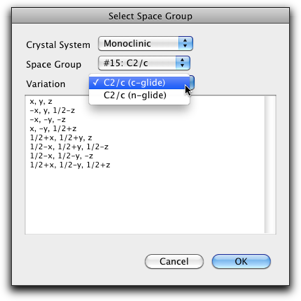
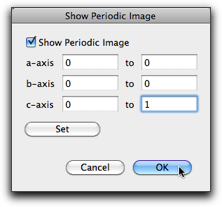

Step Ten: Working with Crystal Structures
Information obtained from single-crystal X-ray analysis is a very important source of molecular structure. Molby can import crystallographic information files (CIFs) and handle structural data included in them. Although Molby does not have capability of solving structures from diffraction data, it does provide convenient features for viewing and examining crystal structures.
1. Importing a CIF file
Select "Open..." menu command in the "File" menu, and choose "Crystallographic Information File (CIF)" as the file type.

Select a CIF file and hit "Open". If the molecule has crystallographic symmetry, it should have bonds including symmetry related atoms. In this case, a dialog like below is shown and you are asked how to handle such bonds.
If the molecule is discrete with an imposed crystallographic symmetry, the default selection (the second one) should work all right. In other cases, where the molecule is an infinite chain, the first choice may make more sense. Expansion by symmetry is also available as a separate command, so it is also safe to ignore extra bonds at this stage (the third choice) and do symmetry expansion later.
After expansion, the molecule looks like this. The atoms with darker colors are "expanded atoms."

Molby internally handles all atomic positions as cartesian coordinates. However, the fractional coordinates can be calculated "on-the-fly." In the property table, you can choose to display the fractional coordinates (together with the site occupancies and isotropic temperature factors) as below.

2. Examining the Crystal Structure
Commands for examining the crystal structure are available in the "Xtal" menu.

2-1. Unit Cell
The "Unit Cell" command is used to set the unit cell parameters. It is also possible to set the origin and the unit cell axes directly.

2-2. Symmetry Operation
The "Symmetry Operation" command is used to add/remove the symmetry operation, or change the space group.
Hitting the "Select..." button causes another dialog to open, where you can choose one of the predefined space groups. All 230 space groups are included with various origin and axis settings (not all possible choices are covered though).

2-3. Symmetry Expansion
The "Complete by Symmetry" command is used to expand the molecular fragment in the asymmetric unit. It is supposed to work similarly as the "expand fragments" option in loading CIFs, but the result may be different. (This is because, in the "Complete by Symmetry" command, the bonds between different asymmetric units are "guessed" based on interatomic distances instead of being read from the CIF file.)

The "Create Packing Diagram" command generates symmetry-related atoms within the given range of the fractional coordinates.

The "Show Periodic Image" command does not generate new atoms, but shows the periodic images of the present unit cell.

The "Remove Expanded Atoms" command removes the atoms generated by symmetry expansion. There are two options; one is to remove all expanded atoms, and the other is to remove only those atoms that are included in completely expanded fragments (i.e. the fragments containing at least one non-expanded atoms will be kept unchanged).
The result looks like below. Note that the periodic images are still shown, because they are not expanded atoms but just images shown on the screen.

2-4. Bonds, Angles, and Planes
The "Bonds and Angles with Sigma..." command is used to calculate the interatomic distances and angles with the standard deviations.
Hit "Add Bond" or "Add Angle" button to create a new entry, then select the atoms one by one in the main window. After adding one "bond" and one "angle", the window looks like below. Note that you can choose atoms that are not connected via chemical bonds.
To use the calculated information in other applications (like pasting into a word processor), select the table rows and hit "Export to Clipboard." The information is copied as a plain text (one line per row) that can be pasted into other applications.

The "Best-Fit Planes" command is used for calculating mean planes, angles between the planes, and distances of atoms from the plane. After the dialog is opened, the set of atoms can be assigned by selecting the atoms in the main window and hit one of the "Set Current Selection" buttons.

2-5. ORTEP Drawing
The "Show ORTEP" command open the dialog like below.
The ORTEP drawing is created by the bundled ORTEP-III program. The following citation should be made when using the output.
- Burnett, M. N.; Johnson, C. K. ORTEP-III: Oak Ridge Thermal Ellipsoid Plot Program for Crystal Structure Illustrations, Oak Ridge National Laboratory Report ORNL-6895, 1996.
On this dialog, you can choose the appearance of the atoms and bonds. The orientation of the drawing is similar (although not completely the same) as in the main window. The drawing can be exported as an ORTEP input file or a graphic file (either as an encapsulated PostScript file, a PNG file or a TIFF file). When exporting to a bitmap file, the drawing is done at resolution of 360 dpi.